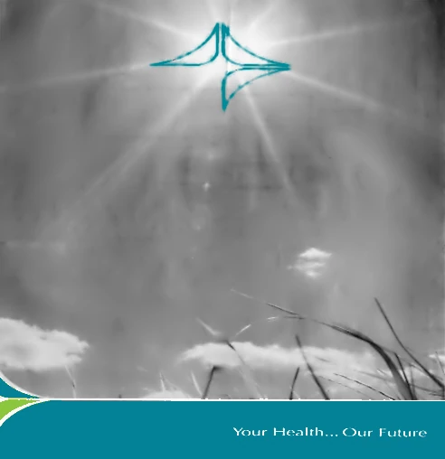
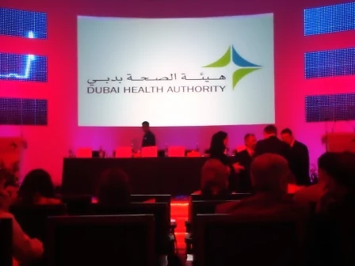
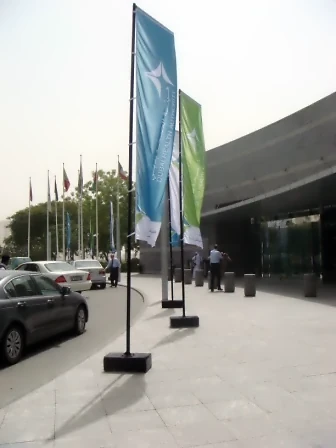
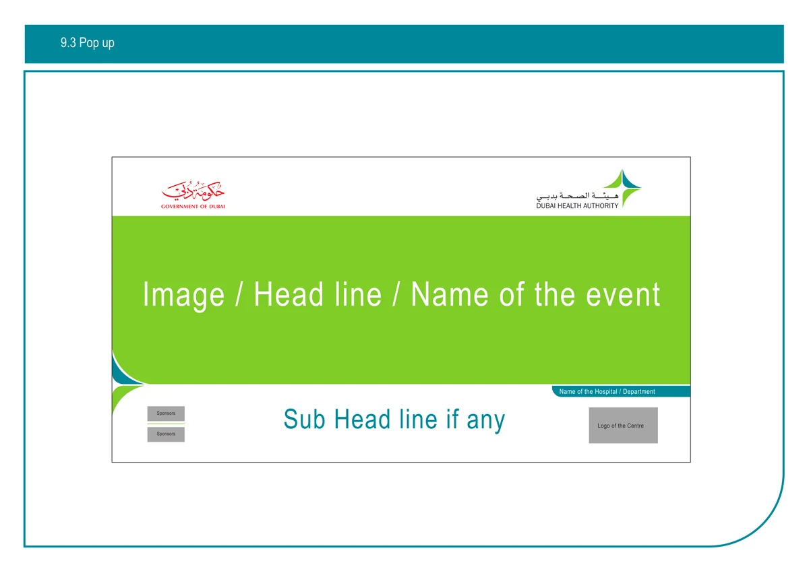
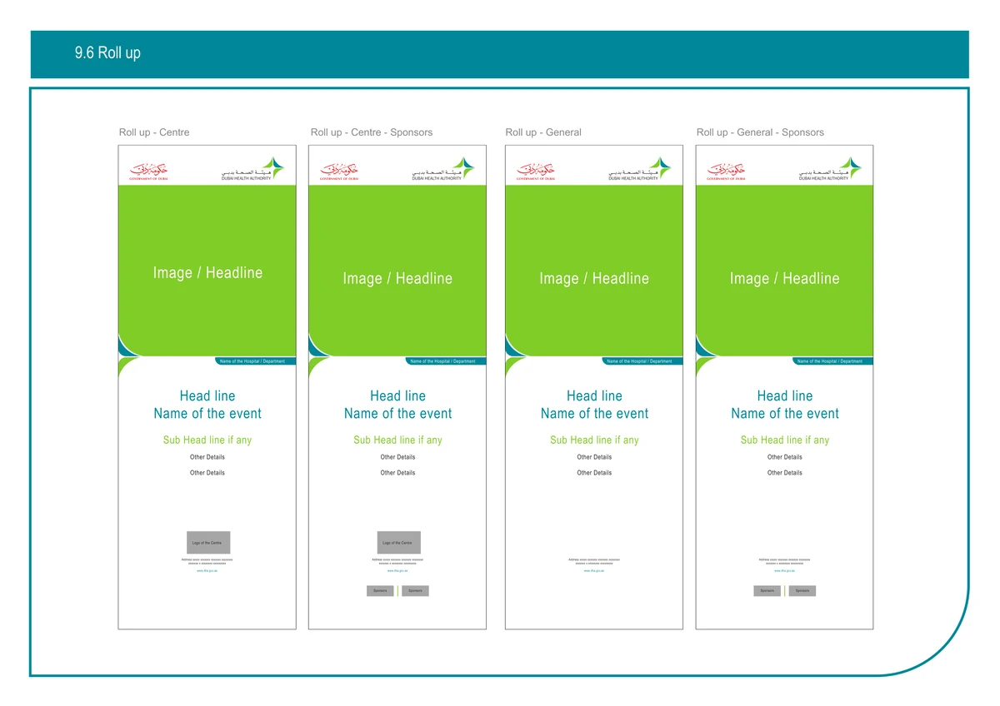

Dubai Health Authority · identity and launch · 2008
Dubai Health Authority
Chosen by almost 1,000 of its own staff. Still its mark, 18 years on.
Antoni Gerges, Creative Director, Brand & Experiential · AntBrush
The idea in motion: a point of light, the flower, the wings, then the mark · made for this portfolio
The mark, built.
3D, live in the page · built from the 2008 manual’s own drawing
The launch



From 30 March 2008: only the shape. No name.
13 April 2008: colour, and the name.
Read more
04 / 06
Tease, then revealThree pictures with only the outline of the star. Then the same three in colour, with the logo.
05 / 06
First, no nameFrom 1 April 2008 the roads showed only the shape, in black and white.
06 / 06
Then colour, and the nameOn 13 April the logo was unveiled. The same pictures came back in colour, with the name.
The teasers and revealers were three pictures: the butterfly, two boys on a beach and a baby reaching for a light. The two with children are shown small: on the lamp posts of the road below, and in its photographs.


The launch campaign · three pictures, in colour and with the name, from 13 April 2008
0 titles · 0 lamp posts
One launch, across the city.
- 13 titles
- 47 lamp posts in the media plan
- unipoles
- leaflets, brochures, booklets
- US$2.3M launch campaign, the media buy included
3D · the ads on paper at each format’s size; the boxes at the media plan’s size · made for this portfolio
Read more
Newspapers: Gulf News, Al Khaleej, Al Bayan, Emirates Business 24/7, Emarat Al Youm. Magazines: Medical Times ME, The Arab Hospital, Healthcare ME, ME Dentist, Arabian Business in Arabic and in English, Kul Al Usra, Zahrat Al Khaleej. From the media agency’s rotations and evaluation, April to May 2008.
Back-lit boxes on lamp posts on Garhoud Road, Jumeirah Beach Road and towards the airport: 11, 16 and 20 poles in the media plan of 8 April 2008, which is unsigned, so its counts are plans. Unipoles on Garhoud Road. Here each side of the road carries the run in turn, as the media agency’s photographs show it: the butterfly, then the two boys, the baby reaching for the light and the mark panel. Its report does not say which picture stood on which pole.
A front page as it ran: Emirates Business 24|7, with three advertisements round its masthead. A scan from the media agency’s evaluation report.


Garhoud Road. Jumeirah Beach Road. The road to the airport.
Map: © OpenStreetMap contributors · photographs: the media agency’s outdoor report, April 2008
Read more

The two boys · no name The butterfly · no name


The two boys · the name 
The butterfly · the name

Eleven photographs from the media agency’s outdoor report, hazy as they were taken, corrected only for haze; the faces in them are too small to read. No photograph of the airport road is in the report, so that road is drawn without one.


Leaflets, brochures and booklets, in Arabic and English.
Read more

The launch leaflet Opened flat · print file, 28 May 2008

The launch leaflet, printed both sides, one side in English and one in Arabic; bilingual leaflets in September 2008; the tri-fold brochure; the Health Care Program leaflet; the Health Funding booklet. The folding leaflet here is a model, its English side from the print file.


Dubai Health Authority: Healthcare for All · photographs, 9 June 2008
All the photographs


Unveiled 13 April 2008. On stage, 9 June.
Read more
The Director General unveiled the logo on 13 April 2008 (Gulf News, 13 April; Khaleej Times, 14 April); no photographs of that day have been found. On 9 June 2008 the authority presented its plan for the future in a branded hall: the flags, the logo wall, the pop-up, the roll-ups, the online-community kiosks and the logo on the stage screen; the Director General’s presentation and the kiosk screens were AntBrush jobs.
The manual sets out the pop up and the roll ups for events, with their places for a picture, a headline and the event’s name; the photographs above show them as built.

Pop up The manual’s template · third edition, page 71

Roll ups The manual’s templates · third edition, page 74


The system kept working.
The project, in words
The project, in words.
What we delivered.
Identity
- Identity proposal: four presentations, 12 logo routes
- The mark, chosen by almost 1,000 staff
- Brand manual, 62 pages
- Stationery and executive stationery
Campaign & print
- Launch campaign in five newspapers and eight magazines, Arabic and English
- Two false covers and a Gulf News wrap
- Outdoor, April 2008
- Launch pamphlet
Digital
- Website design
- Branding for the computer terminals
- The Director General’s launch presentation

The mark, chosen by almost 1,000 staff The brand manual, 62 pages 
Launch campaign: Your Health… Our Care


From the invoices marked delivered, the brand manual and the media agency’s evaluation of the campaign.
Explore the idea and the system
The idea
A star with one corner left open. The name completes it.


30 December 2007nine routes
Four presentations. Three weeks. One star.
Read more
3D model · made for this portfolio
Draw many. Choose one.01 · The identity and its launch
Our own presentation pages of 2007 and 2008, laid out by date. Then the mark, built again from the manual’s drawing, and how the city met it.
01 / 06
Four presentations, three weeksNine routes, then a second round, then a third, where the star first appears. Then our final deck of four routes.
From 30 December 2007to 20 January 2008
Every board is our own presentation page, whole: nine routes on 30 December 2007, ten on 2 January 2008, the third round on 10 January 2008, where the star first appears on page 9, and Route 01 of the final deck of 20 January 2008.

Almost 1,000 of its staff voted. They chose this.
Read more
“Almost 1,000 staff voted for it, out of four options” (Gulf News, 13 April 2008). “A short-list of four proposed logos using an electronic voting system” (Khaleej Times, 14 April 2008).

Khaleej Times · 14 April 2008 · the article online, captured 6 October 2026
A light. A flower. Wings. A butterfly. The name completes it.
Read more
02 / 06
An open starA square. A leaf cut from it. Three wings, and one corner left open for the name.
“For a brighter and healthier future, DHA is clear as light.” The pieces are clear wings, for transparency; the clear diamond in the centre is that transparency. “An incomplete shape. DHA will complete the picture.” The four photographs are the manual’s own (Brand Identity Manual, 2008, imagery).


A light · A flower · Wings · A butterfly · the 2008 manual’s own pictures


- Progression
- Freedom
- Care
- Vision
- Excellence
One word: future. One line: Your Health… Our Future.
Read more
Pantone 376 C green for growth, Pantone 321 C turquoise for knowledge and wisdom, black for solidity; grey K70 beside them. Five supporting colours, one for each value: progression, freedom, care, vision, excellence.


Governmental, with a personal touch: “Deliver the message with a warm smile and a caring hand.” Confident, knowledgeable, helpful, effective, stimulating growth. Our note on the launch copy of 10 March 2008 said it shorter: authoritative, yet warm and caring.
Taken from nature, because a hospital should feel clean and a patient should be able to relax.
The system
1 mark · 1 kit · 0 applications
One kit of parts. Every application.
3D · the manual’s applications (2008 and 2009), each at its format’s size · made for this portfolio
One kit of parts. Every application.
The same system as we rendered it in 2010.


Read more
02 · In use
The mark at work, and what followed.The logo on its cards, the stationery and the website as we rendered them, the launch leaflet, and a later campaign for the authority.
A kit cut from the mark’s own pieces: frames, tabs and corner curves that build every template (manual, section 2). The twenty applications here are the manual’s: letterhead and continuation sheet, three envelopes, business card, folder, note pad, two project reports, PowerPoint template, CD cover and CD sticker, the portrait advertising system, two posters, four roll-ups, the pop-up stand, the extreme advertising system (third edition, page 81) and the manual itself.
Signage, uniforms and the uniform badge were quoted in February 2008; no artwork for them has been found, so they are not shown.


Brand Identity Manualfirst edition, 8 March 2008
Three editions, 2008 to 2009. 83 pages.
Read more
03 / 06
The manualTen of its pages: the cover, the idea, its development, the clear space, both languages, the kit of parts, the colours, the Pantone colours, the typefaces, the advertising system.
Created by AntBrush · first edition8 March 2008
8 March 2008, 62 pages; 12 February 2009, 70 pages; 12 May 2009, 83 pages, adding the vehicle, the brochure, the pop-up, the posters and the roll-ups. Every edition: “Created by AntBrush”. The book here turns pages of the first edition and stops on its advertising system.
From the first edition: the kit’s frames and the imagery style.


The website, launched July 2008.
Read more
The design template and its colour codes by AntBrush; the programming by 85Four; launched 4 July 2008 (Khaleej Times). The Wayback Machine holds the site from 13 June 2008; its pictures were not archived, so the captures show the layout only.


Read more
Dubai’s new health authority asked its staff to choose its mark. They chose the design developed by the team I led. Together, we carried the identity into a city-wide launch campaign through AntBrush.
Eight agencies were invited and four were shortlisted. Each of the four presented its logo and its meaning in a film. That part is my own account; the pitch film has not been found.
Our side of it: four presentations in three weeks. Nine routes on 30 December 2007, a second round on 2 January, a third on 10 January 2008, where the star first appears, on its ninth page; then a final deck of four routes on 20 January. The line “Your Health… Our Future” was already in the first.
On record: the staff chose from a short-list of four logos by electronic vote (Khaleej Times, 14 April 2008), and almost 1,000 voted for the star (Gulf News, 13 April 2008).
The mark began as a bright light. Our manual says it: “For a brighter and healthier future, DHA is clear as light.” Its pieces are clear wings, for transparency. People read it as sun rays, a flower, wings, a butterfly.
Three pieces, and one corner left open. “An incomplete shape. DHA will complete the picture.” The name sits in the open corner.
One word for the whole brand: future. One line: “Your Health… Our Future”. “You” and “our” were chosen on purpose; the manual puts it simply: “We are all in this together.”
Turquoise for knowledge and wisdom, green for growth, black for solidity: the manual’s colours, and the colours of this page.
Tease, then reveal. From 1 April 2008 the roads carried three pictures in black and white, with only the outline of the star and one line: Your Health… Our Future.
On 13 April the logo was unveiled, and the same three pictures came back in colour, with the name. It ran on back-lit lamp-post boxes and unipoles on Dubai’s roads, and in five national newspapers and eight magazines, in Arabic and English.
It became my agency’s biggest project.
We also wrote and storyboarded a 40-second television commercial, on 3 April 2008. It was not made.
No film from 2008 has been found. The opening film and the 3D models are made now, for this portfolio, from the artwork itself: our presentation pages and the manual’s pages (its edition of 12 May 2009), whole; the mark from the manual’s own outlines; the light boxes from the press artwork.
The outdoor print files have not been found, so the boxes carry the press artwork; the mark panel is drawn from the manual’s own vectors and the teasers’ band, after the photographs. The road at dusk is a model. The photographs are the record: they come from the media agency’s outdoor report, shown whole, with a mild correction for haze.
The result.
83% of the UAE’s local and Arab print audience saw the launch campaign.
03 · In the newspapers of April 2008Still its mark, 18 years on.
- 83% of the UAE’s local and Arab print audience saw the launch campaign.
- Chosen by almost 1,000 of its own staff.

Source: Gulf News, 13 April 2008, “Dubai Health Authority unveils new logo”.
More figures
Short-list and vote: Khaleej Times, 14 April 2008. Reach: the media agency’s performance report for UAE print media, 1 March to 22 May 2008; it does not cover outdoor. Poles: the media plan of 8 April 2008, which is unsigned, so its counts are plans. Campaign: a US$2.3 million launch campaign, the media buy included, from our own records. Titles: the media agency’s evaluation report, June 2008. The media agency was MediaEdge:CIA.
3D film · made for this portfolio from the 2008 artwork
Creative Director, Brand & Experiential